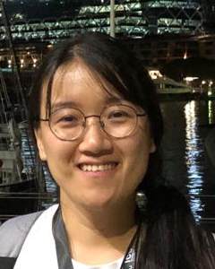

Contact Us
Registration and Contact Information
For any inquiries, please email us at chart.infographics@gmail.com.
For registration, pleace check here.
Organizer Information
| Kenny Davila |
Kenny received his B.E. degree in Computing Systems engineering from Universidad Tecnológica Centroamericana (UNITEC), Tegucigalpa, Honduras, in 2009. He received his M.Sc. in Computer Science and Ph.D. in Computing and Information Sciences degrees from Rochester Institute of Technology (RIT) Rochester, New York, USA in 2013 and 2017, respectively. In 2017, he joined the Center for Unified Biometrics and Sensors (CUBS), University at Buffalo as a post-doctoral associate. In 2021, he become a faculty member at Universidad Tecnológica Centroamericana in Honduras. His current research interests include chart mining, lecture video analysis, handwriting recognition, and mathematical information retrieval. |
| Saleem Ahmed |
Saleem received his B.Tech (2015) in Information Technology from NIT, Bilaspur, India, and his M.S (2019) in Computer Science with a specialization in Artificial Intelligence from University at Buffalo, SUNY USA. He is currently a Ph.D. candidate at the Department of Computer Science, University at Buffalo, SUNY. His primary research interest is graph matching and pattern retrieval problems with applications in document analysis. He has previously worked on video summarization and math search retrieval. His most recent work centers around building end-to-end chart data extraction models. He will assist in the evaluations for the competition. |
|  Fei Xu |
Fei received her bachelor’s degree in Electrical Engineering from Zhejiang University City College in Zhejiang, China, 2012. In 2015, she received her master’s degree in Computer Science from the University at Buffalo, New York, US, where she is now a Ph.D. student at the Center for Unified Biometrics and Sensors (CUBS). Her current research projects include human action recognition, affective computing and chart recognition. She received the best student paper award at the International Conference on Document Analysis and Recognition (ICDAR) 2019, and was featured in the IAPR The Next Generation in the IAPR Newsletter from April 2020. She will assist in the data set creation and in evaluation. |
| David A. Mendoza |
David is an undergraduate student of Computing Systems Engineering at the Universidad Centroamerica Tecnologica (UNITEC), He was born and raised in Honduras. He is an active member of the open-source Community ranging from low level algorithms for students, to High Level Web programming SDK. He has participated and won the first place on the second edition of the Congreso Nacional de Ciencia, Tecnología e Innovación (CONACIETI 2021), where he was in charge of implementing the Neural Network used in the project. He will assist in creating and extending tools for chart image annotation. |
 Srirangaraj Setlur |
Ranga is a Principal Research Scientist at the Center of Excellence for Document Analysis and Recognition, Department of Computer Science and Engineering and Co-Director of the NSF Center for Identification Technology Research at the University at Buffalo, SUNY. He has contributed significantly to the development of real-time automated systems for handwriting recognition and multilingual OCR well as to the development of methodologies for evaluating the performance of large scale recognition systems. He is on the editorial board of IJDAR and is a co-author of the Springer Guide to OCR of Indic scripts. He is a Senior Member of IEEE. |
 Venu Govindraju |
Venu Govindaraju is responsible for managing UB's research enterprise, university/industry relations and economic development, contributing to the economic and cultural vitality of New York State and around the world. Govindaraju's research focuses on machine learning and pattern recognition and his seminal work in handwriting recognition was at the core of the first handwritten address interpretation system used by the U.S. Postal Service. Dr. Govindaraju has authored more than 400 scientific papers including over 80 journal papers. |